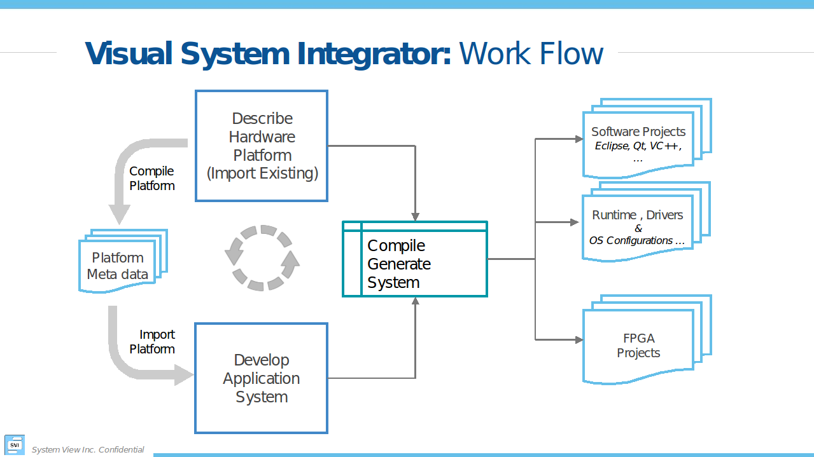
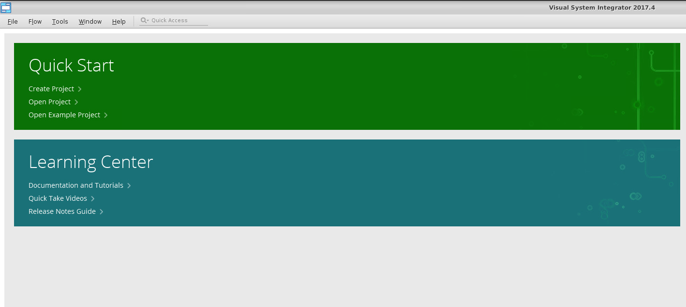
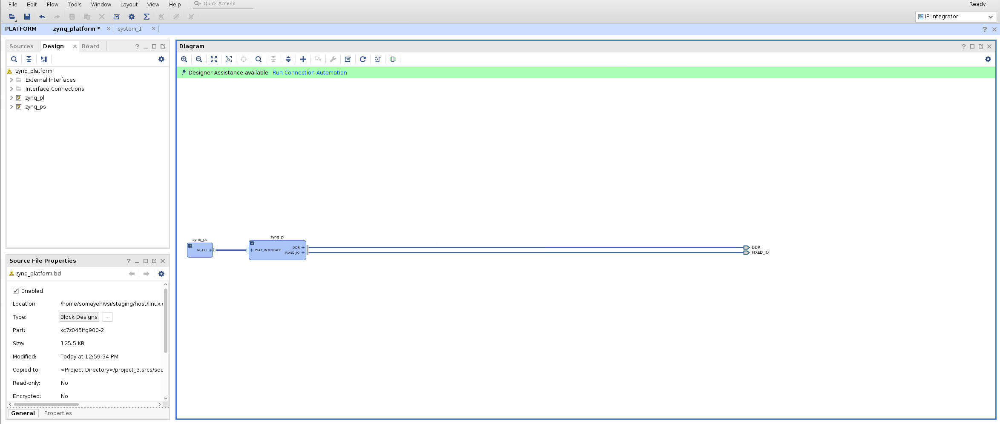
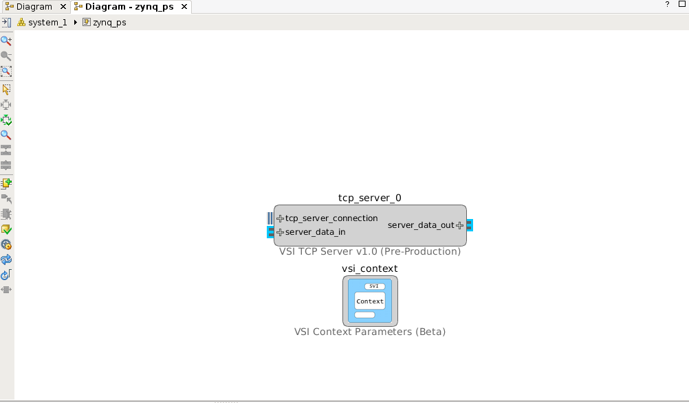
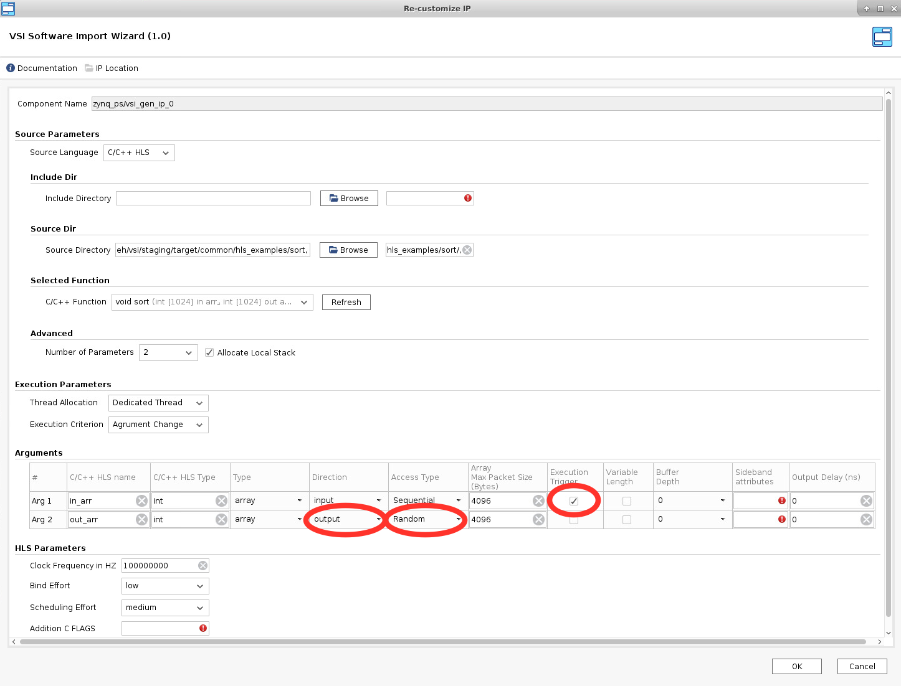
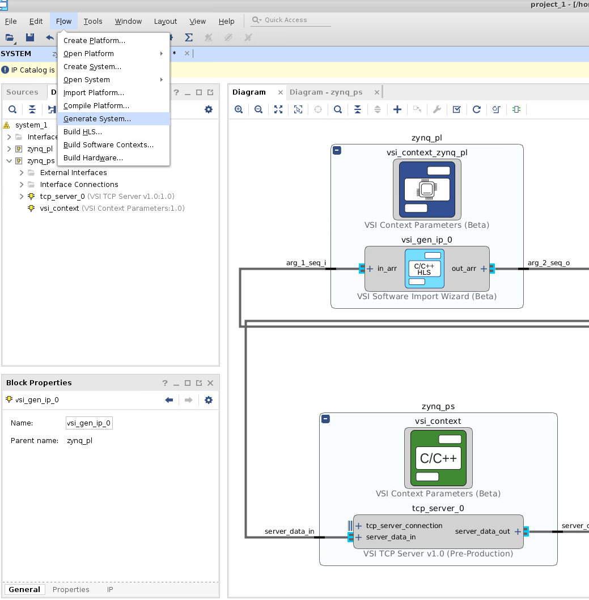
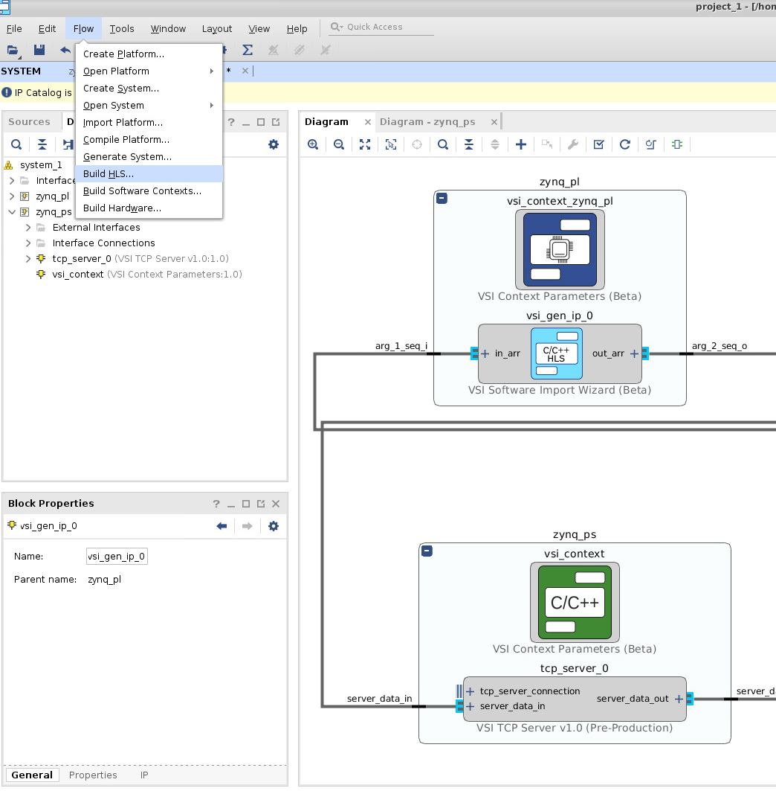
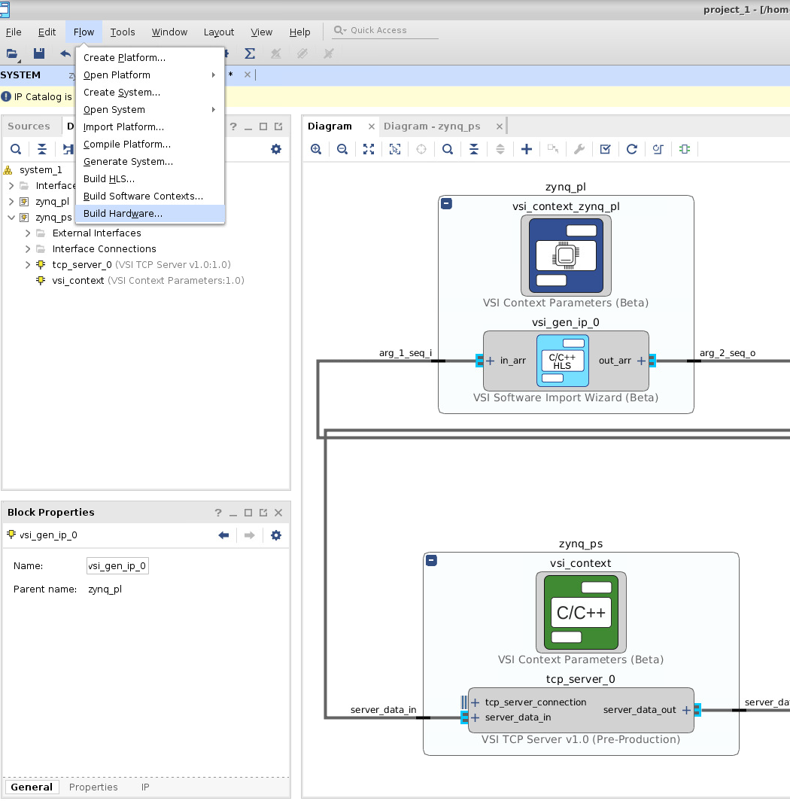

Visual System Integrator: Getting Started Guide
Introduction
This document will describe how to create a simple system using Visual System Integrator. The document assumes that VSI is installed, please follow instructions at http://docs.systemviewinc.com to install the product. In this document, we will describe how to build a Zynq 7000 based system.
Concepts
The Visual System Integrator (VSI) has two canvases:
- Platform Canvas
- System Canvas
The system design process in VSI begins by creating a platform. The platform consists of one or more “Execution context”. An “Execution Context” is defined as an entity in which a Hardware (RTL) or a Software (C,C++,Java) block can be placed for execution. The “Platform” defines the “Execution Contexts” that will be used in this System and how they are connected. VSI currently supports the following “Execution Contexts”:
- Software
- X86
- ARM-32 bit
- ARM-64 bit
- ARM-Cortex-R5
- Hardware
- All Xilinx FPGAs supported by Vivado
- Simulator (XSIM, Modelsim)
For Hardware Contexts blocks / interfaces that require timing/location constraints must be placed in the “Execution Context”.
Work Flow
Figure 1 shows the “Work Flow” when using VSI. The user starts by Creating a platform or Importing an existing platform. Once the Platform is Created/Imported the user then “Compiles” the platform. The next step is to create the “Application System” canvas and import the Platform definition. The application development involves importing RTL or C/C++/Java blocks of code with well-defined interfaces and connecting these interfaces to form the Dataflow graph of the Application System. The VSI System Compiler and the VSI Runtime will move the data between these blocks as they execute in their assigned “execution contexts”. With some restrictions, the blocks can be moved between “Execution Contexts”. Once the application system is developed the user can “Generate System” , the VSI System Compiler will generate Vivado IPI Projects (for Hardware Contexts) and CMake based projects (for Software Contexts); there are no restrictions to the number of “Execution Contexts” in the system.

start the vsi software
>${vsi_install}/host/<host_type>/bin/vsi
${VSI_INSTALL} – path to VSI installation
HOST_TYPE – linux.x86_64 | windows.x86_64
Now you can Create A New Project or continue with this guide to import an existing example.
Platform
In this guide we will import an existing platform.
Import Existing platform
Quick Start --> Open Example Project…

Choose a name, location, and a default Xilinx board for your project. Then choose zynq from platform_list.

This will create a Platform with two “Execution Contexts” . A Software context “zynq_ps” and a Hardware context “zynq_pl”.

Context connections
Expanding and zooming into each context we see that the “Device Driver” block in the “Software Context” is connected to the “VSI Common Interface” in the Hardware Context. This describes the connectivity between the two contexts. The connection represents a logical connection between the two contexts and allows the VSI system compiler to determine the connectivity.

Compile Platform
This completes the Platform Import process. The platform now needs to be “Compiled” . Click Flow --> Compile Platform to compile the platform.

Application System Canvas
Create Application System Canvas
The Application Canvas is created by Clicking Flow --> Create System …

This will create a blank “System Canvas”

Import Platform
We will “Import” the platform definition.

After we import the execution contexts show up as blank entities.

Develop Application
In VSI the application development process involves importing/creating blocks and connecting the interfaces of the blocks to represent the dataflow model of the entire system. The Blocks can be imported from a Library (these blocks have predefined interfaces). The user can also choose to import pre-existing C/C++/Java functions into the canvas using the “Software Import Wizard”, the arguments of the functions chosen to be imported become the interfaces of the imported block. See “VSI User Guide” for more details on the Software Import Wizard.
Import Block From Library:
We will import a TCP/IP server from the Library in the Software Context “zynq_ps”, this block will be used to send and receive data from the external host. Double click anywhere in the software context enter into it. Right-Click and select “Add IP … “.

Select “VSI TCP Server v1.0”.

This will place the TCP/IP server in the System Canvas.

Double click on the TCP/IP server block to check the configuration.

In the default configuration, the server will open the port 2020 and wait for connection from “any” host. When a connection request is received, it will accept the connection. There is no predefined protocol, any data received by the server is sent to the interface “server_data_out”. Any data received from the interface “server_data_in” is sent back to the client that is attached to the port. The TCP/IP server acts as a Data interface to the external host.
Import C/C++ code
We will use the “Software Import Wizard” to import a “sort” function as a block . Refer to the Section “Software Import Wizard” in “VSI User Guide” for more details on the Wizard. Right-click and select “Add IP …”

Select “VSI Software Import Wizard” .

Double-Click on “vsi_gen_ip_0” to import the “sort” C function. The “Source Directory” box either “Browse” to or enter the directory $(VSI_INSTALL)/target/common/hls_examples/sort (note you will need to enter the absolute PATH to the directory, environment variables are NOT allowed). The “Software Import Wizard” will call a “built-in” C/C++ parser and present drop-down list of functions it finds (C/C++ Function Name).

Choose the sort function , and navigate to the “Arguments” section.
The “Arguments” section will show the two arguments “in_arr” and “out_arr” with some default values filled in.
Update the Fields marked in the screen shots.
- Mark “in_arr” as an “Execution Trigger”; this indicates that the VSI runtime will execute this function whenever data is available in this input interface.
- Mark the “Direction” of “out_arr” as “output”. The sort function puts the output into this buffer when it finishes execution.
- Change “Access Type” of “out_arr” to “Random”. The sort algorithm accesses the output array in a non-sequential fashion. The “Access Type” will ensure that a “Block Ram” interface is generated for this interface when placed in a “Hardware Context”.
Click OK. The interfaces of the block are now updated to reflect the name and direction specified in the “Arguments” section.

Connect the “server_data_out” interface of the TCP/IP server block to the “in_arr” interface of the “vsi_gen_ip_0” block. And connect the “out_arr” interface of the “vsi_gen_ip_0” block to the “server_data_in” interface of the TCP/IP block to complete the System Design.

The VSI runtime will now ensure that when data arrives on the “socket” of the TCP/IP it will be sent to the input of the “sort” function, and when the sort function finishes the VSI runtime will send the data from “out_arr” to the TCP/IP server which will send it back over the “socket” to the connected client. Some blocks can be moved between execution contexts.
Now the application development phase for this example, is complete.
Build Application
Generate Projects for Hardware & Software Contexts.
This step will generate complete projects for all Software & Hardware projects. With the System Canvas open Click on Flow --> Generate System …

All projects are generated. They are placed in the following location
- $< project_directory>/vsi_auto_gen/hls – directory contains all Vivado HLS projects for all Hardware Contexts. It contains a top level makefile. The user can cd to this directory and type “make” and all the HLS projects will be built.
- $< project_directory>/vsi_auto_gen/sw – directory contains the software projects for all the software contexts; each software context has its sub-directory . In this example, there will one directory “zynq_ps”.
- $< project_directory>/vsi_auto_gen/hw – directory contains scripts for creating Vivado IPI project for each Hardware Context.
Build the High-Level Synthesis blocks.
This step will call Vivado HLS under the hood to create RTL blocks for all synthesizable C/C++ blocks that are in Hardware Contexts. Please note this step might take a few minutes. With the System Canvas open click on Flow Build HLS …

Build the executables for Software Contexts.
In this step, we will create the executables for all the Software Execution contexts. With the system canvas, open click Flow --> Build Software Contexts….
This call the compiler or cross-compiler specified in the context definition and generate the executables for each of the software contexts in the project. The executable is placed the directory $< project_directory>/vsi_auto_gen/sw/< system_directory>/build/< software_context_name>/bin/< software_context_name>. In this example, the executable will be $< project_directory>/vsi_auto_gen/sw/system_1/build/zynq_ps/bin/zynq_ps .
Building the Hardware Project:
To build the hardware, select Flow --> Build Hardware….

This completes the build process for the example project.
Execute Application
In this section, we will go through the steps of executing the generated project on a Zynq-SoC Based MicroZed board.
Prerequisites:
- Build the Linux kernel and root file system for the Board you are using
- Cloning repository https://github.com/systemviewinc/fpga_driver.git to your home directory.
- Source the xilinx environment settings: source /opt/Xilinx/Vivado/< version>/settings64.sh
- Build the driver with make:make CROSS_COMPILE=arm-linux-gnueabihf- ARCH=arm KERNEL_SOURCES=/< home_dir>/build/driver_vsi/linux-xlnx
Copying Files:
Login to your board and create a directory in the root-file-system, this is an optional step. It will help you isolate the files being copied. Four files need to be copied from the build directory to the target filesystem. - The bitstream file
- For Non-Yocto linux kernels. The generated Bitstream file is zynq_pl_wrapper.bin. This file can be found at < hw_project_directory>/zynq_pl/zynq_pl.runs/impl_1/zynq_pl_wrapper.bin.
- For Yocto Linux kernels. The generated Bitstream file is zynq_pl_wrapper.bit. This file can be found at < hw_project_directory>/zynq_pl/zynq_pl.runs/impl_1/zynq_pl_wrapper.bit.
- The driver installation script found at $< project_dir>/vsi_auto_gen/sw/
/driver.sh ($< project_dir>/vsi_auto_gen/sw/zynq_ps/driver.sh) - The Software Executable $< project_dir>/vsi_auto_gen/sw/build/
/bin/ ($< project_dir>/vsi_auto_gen/sw/build/zynq_ps/bin/zynq_ps) - The device driver “vsi_driver.ko” created in the previous step.
Start Application on Target
- The following step will configure the FPGA with the bitstream copied in the previous step
- cat zynq_pl_wrapper.bin > /dev/xdevcfg
- Load the driver , you might need to change the execute permissions “chmod +x ./driver.sh”
- ./driver.sh
- Start the application
- ./zynq_ps
Send Data to Application
At this point the application is up and running and is waiting for data on the TCP/IP Socket . System View provides two applications to send data to the target. The source code for both can be downloaded from http://release.systemviewinc.com : TCP Clients [Folder]
Python client
echo_client.py is a simple python program that will connect and send data to a TCP/IP server to run this client on the host from which you want to send the data. python echo_client.py < zed ip address> 2020 < number of times to send data>
` ex: python echo_client.py 192.168.2.21 2020 1
Output should look like this: 0 connecting to 192.168.2.21 port 2020 sending "4096" total receiving "4096" total closing socket *Checking Data** TX data length: 1024 RX data length: 1024 *RX data matches TX sorted data*`
Socket C Client
This client will read from a file and send the data to a TCP/IP server , the source code is provided “sock_send_recv_file.c”, it needs to be compiled on the host that will send the data to the target.
Compile: gcc –o sock_send_recv_file sock_send_recv_file.c –lpthread
Execute : sock_send_recv_file <ip_address> <port_no> <input_file> <output_file> <packet_size>
sock_send_recv_file 192.168.2.21 2020 sort.in sort.out 4096
Running Trace
If any interface in the system design is annotated for “trace” then a trace server is automatically built-into the application. Download the latest trace application from http://release.systemviewinc.com : Trace Application [folder] for the appropriate host. Once the application is running in the previous step, the trace application can be connected to the application to view realtime transaction trace information for the complete system.

Enter the IP Address of the target and press connect to start trace data collection & display.